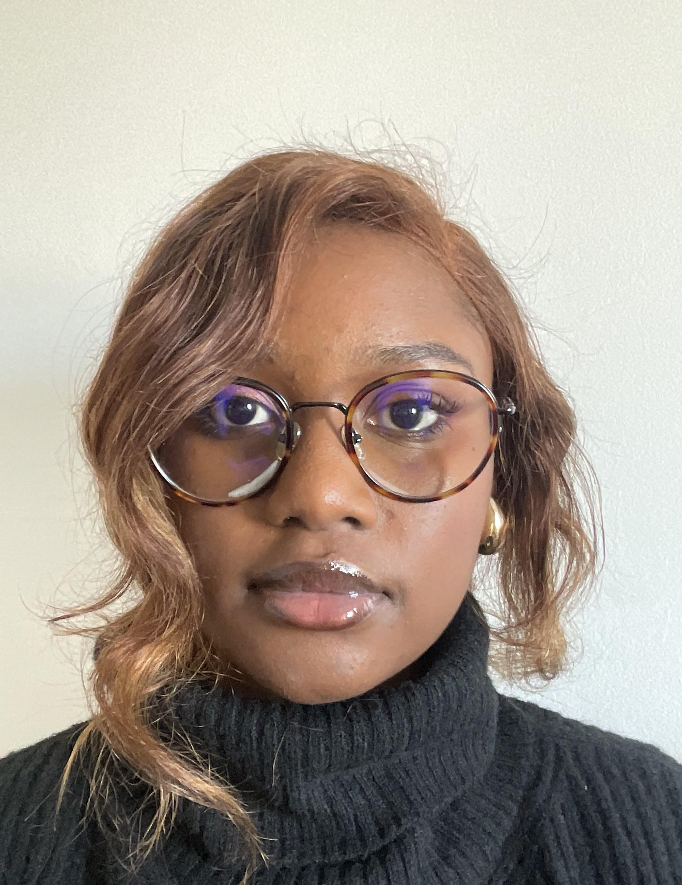
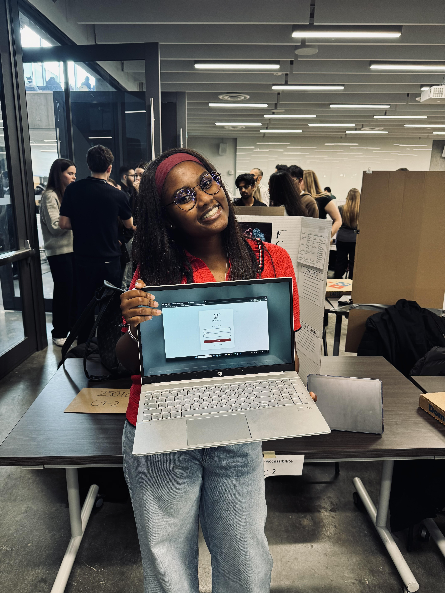

Je suis Bineta Ly, étudiante en génie chimique à l’Université d’Ottawa, passionnée par la science appliquée, les solutions durables et l’accessibilité à l’éducation.
En savoir plusJ’ai grandi dans un environnement où l’eau, l’électricité et parfois même l’accès à l’éducation n’étaient pas acquis. Ça m’a donné très tôt une curiosité scientifique… et surtout l’envie de rendre les choses plus simples, plus utiles, plus accessibles.
Aujourd’hui, je me passionne pour les environnements industriels, les procédés plus responsables, et les projets où la technologie sert vraiment les gens — notamment quand elle aide à apprendre, comprendre, ou gagner du temps.
Je viens de terminer UoTranslate, un prototype de traduction en temps réel pensé pour les étudiants : l’idée, c’est de réduire les barrières de langue et d’aider à suivre un cours plus sereinement.
En parallèle, je construis mon parcours en génie chimique avec une approche très terrain : j’aime modéliser, tester, analyser, et transformer des idées en solutions concrètes — même sous forme de prototypes.
Je suis une personne curieuse, créative et très “solution”. J’avance avec une idée simple : apprendre vite, comprendre à fond, et construire des choses utiles. Si je peux, au passage, inspirer ou faciliter la vie de quelqu’un — c’est encore mieux.
